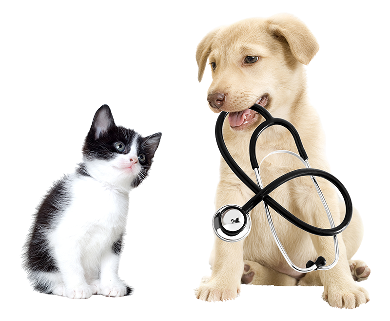

Pregúntale.
Sin rodeos.
Servicios, ubicación y una cita veterinaria de prueba. El chat aparece al activarlo; las reservas utilizan únicamente la agenda ficticia.
«Quiero probar una cita para mi perro ficticio, ¿qué huecos hay?»
EN ALMERIMAR. A SU LADO.
Sus pequeños gestos hacen grande tu vida. En Bienestar Animal, su salud merece la misma atención.
Medicina veterinaria.
Con el cariño de siempre.

01 / LO QUE NOS UNE
De las primeras revisiones a los momentos en los que necesitan más atención. Medicina general, prevención y servicios veterinarios en un mismo centro, aquí, en Almerimar.
02 / SUS CUIDADOS
Elige un cuidado para conocerlo mejor. El equipo veterinario te confirmará qué atención necesita tu animal.
TAMBIÉN, A SU LADO
El centro comunica atención equina, consultas generales, medicina deportiva, diagnóstico, reproducción y cirugía. Estas visitas requieren coordinación directa con el equipo.
Servicios basados en la web actual del centro. La consulta clínica y sus condiciones se acuerdan directamente con el equipo.
03 / TU CENTRO, POR DENTRO
Un lugar al que ponerle cara antes de venir. Recepción, consulta y espacios del Centro Veterinario Bienestar Animal, en Calle Jabeque, 16.
Ven a conocernosFotografías de las instalaciones
publicadas en la web del centro.
SI ES UNA URGENCIA REAL
La web actual del centro publica este teléfono para urgencias. Contacta directamente: la demo y su asistente no prestan atención veterinaria urgente.
607 168 173 Este enlace abre el marcador para una llamada real. No es una prueba de IA ni garantiza respuesta inmediata.04 / AHORA, PRUÉBALO TÚ
Una recepción que puedes probar de verdad. Escribe o usa el micrófono para descubrir cómo respondería, sin llamar al centro.
Servicios, ubicación y una cita veterinaria de prueba. El chat aparece al activarlo; las reservas utilizan únicamente la agenda ficticia.
La misma recepción, con voz en castellano. El micrófono del navegador sirve para probar una llamada; no llama a ningún número.
Solo datos inventados. No compartas teléfonos, correos o información clínica reales.
Esta es una demostración preparada por OMNIA, no la web oficial ni un servicio activo de la clínica. La agenda y sus huecos son ficticios. No hay conexión con su agenda real, WhatsApp, teléfono ni pacientes. El chat y la voz pueden guardar conversaciones y citas de prueba en el CRM de demostración. Una acción solo está realizada cuando la herramienta la confirma; el asistente no debe inventar cancelaciones o recordatorios enviados. La voz de esta web es una prueba de llamada, no una llamada telefónica. En un despliegue real se validarán canales, agenda, reglas, avisos y permisos.
05 / DE LA CONSULTA A LA CITA
Una vista previa del recorrido que podríamos configurar. Toca cada paso para ver cómo lo viviría una familia.
SIMULACIÓN LOCAL · SIN IA NI ENVÍOSLa recepción explica el siguiente paso y recoge solo los datos administrativos necesarios. Aquí, Luna y su familia son inventadas.
06 / UNA RECEPCIÓN CON MÁS RECORRIDO
Posibilidades para diseñar con vuestro equipo. No son automatizaciones ya conectadas en esta demo.
Centralizar consultas, distinguir cita, información y petición urgente, y trasladar al equipo lo que necesita una persona.
Confirmaciones y recordatorios administrativos, con reglas claras y permisos del propietario antes de cualquier envío.
Lista de espera para ofrecer una cita liberada, evitando dobles reservas y cambios sin confirmación.
Solicitar reseñas sin seleccionar solo a las familias satisfechas y detectar cuándo hace falta atención humana.
LA CONFIANZA NO SE INVENTA
Para decidir con información real, consulta las opiniones publicadas y las fotografías del centro. Esta demo no añade testimonios ni puntuaciones inventadas.
Ver ficha y opiniones en Google07 / ANTES DE VENIR
En Calle Jabeque, 16, local 7, 04711 Almerimar, Almería. Puedes abrir la ruta desde la sección de contacto.
Contacta directamente con la clínica en el 950 497 048. La agenda y los asistentes de esta página son de demostración y no envían citas reales al centro.
Sí, su web comunica servicios de atención equina. Contacta con el equipo para coordinar la visita y confirmar las condiciones; la demo no reserva intervenciones o visitas equinas.
No uses la demo para una urgencia real. El teléfono publicado de urgencias del centro es 607 168 173. Este asistente no diagnostica, no prescribe y no sustituye al veterinario.
Hay diferencias entre los horarios publicados. Confirma con el centro antes de desplazarte. Los huecos del calendario de demostración no representan sus horarios ni su disponibilidad real.
Son asistentes de IA en una cuenta de prueba, activados solo cuando lo solicitas. No hay llamadas ni WhatsApp reales. El micrófono permite probar una conversación de voz desde el navegador. El recorrido de cinco pasos es una simulación local separada y claramente identificada.
08 / AQUÍ NOS ENCUENTRAS